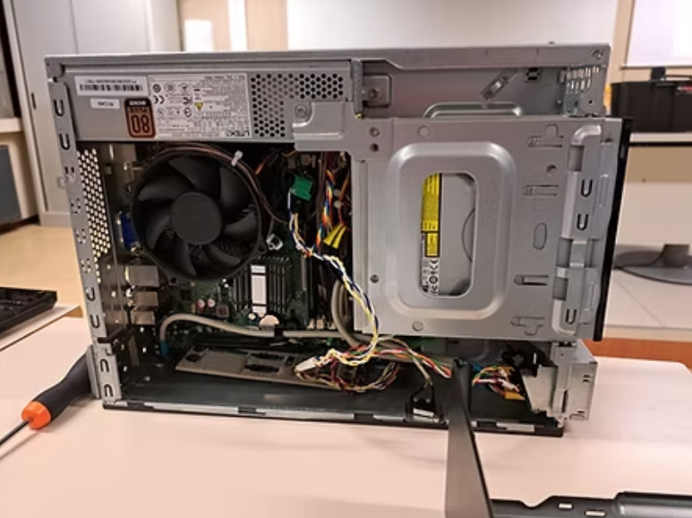

Benvenuti nel mio portfolio scolastico. Qui potrete esplorare il mio percorso formativo e i progetti realizzati durante il triennio di studi all'IIS Blaise Pascal.
Abbiamo partecipato a un incontro su Meet con il professor Vairo, organizzato dall'UST, in cui si è parlato del PCTO. Durante la lezione ci è stato spiegato in maniera semplice che cos'è il PCTO, a cosa serve e in che modo può essere utile per noi studenti. Non è stato presentato solo come un obbligo scolastico, ma come una possibilità concreta per iniziare a conoscere il mondo del lavoro. Il professore ci ha anche spinto a riflettere su come certe esperienze, anche piccole, potrebbero aiutarci a trovare la nostra strada per il futuro.
Alla fine dell'incontro ho sostenuto un test per verificare quello che avevamo imparato e sono riuscito a ottenere il massimo dei voti, prendendo 10. Questo risultato dimostra che ho capito bene i concetti spiegati durante la lezione.
Nonostante si sia trattato di un solo incontro, per me è stato davvero importante. Mi ha aiutato a cambiare punto di vista sul PCTO, facendomi capire che non è solo un'attività da completare, ma un'occasione per crescere e orientarmi meglio verso quello che potrei voler fare dopo la scuola. Questo progetto mi ha lasciato una maggiore consapevolezza su quanto siano importanti certe esperienze per costruire il nostro percorso.

In classe abbiamo partecipato a un progetto chiamato "Monta e Smonta" insieme al professor Pontoriero e alla professoressa Gatti. L'attività consisteva nello smontare dei vecchi computer della scuola, osservando attentamente ogni componente interno come la scheda madre, la RAM, l'alimentatore e l'hard disk. Dopo averli smontati, ci siamo messi alla prova cercando di rimontarli e farli funzionare di nuovo. È stato molto interessante perché ci ha permesso di mettere in pratica ciò che studiamo in teoria, lavorando direttamente sui componenti. Inoltre, lavorare in gruppo con i compagni e con l'aiuto delle professoresse è stato molto utile, poiché ci siamo supportati a vicenda e abbiamo imparato a risolvere i problemi in modo collaborativo.
Alla fine del progetto, ho sostenuto un test su Socrative per verificare le conoscenze acquisite. Ho ottenuto un 6, che mi ha fatto capire che ho bisogno di approfondire ancora alcuni concetti, ma comunque sono riuscito a completare il test con una buona base di comprensione.
Questo progetto è stato molto stimolante, perché mi ha permesso di applicare concretamente le conoscenze teoriche che abbiamo studiato. Smontare e rimontare i computer mi ha dato una comprensione più profonda del loro funzionamento. Anche se il test finale non è andato come speravo, il lavoro pratico mi ha aiutato a capire meglio i componenti hardware e a migliorare le mie capacità manuali. Sono contento di aver completato il progetto con il gruppo, perché abbiamo imparato a lavorare insieme, risolvendo i problemi che si presentavano. Questa esperienza ha consolidato il mio interesse per l'informatica e mi ha fatto capire quanto sia importante la pratica.
Tra i progetti che mi hanno colpito di più c'è sicuramente quello che abbiamo fatto alla scuola Blaise Pascal, dove abbiamo lavorato con i nonni. In alcuni incontri, noi studenti abbiamo avuto l'opportunità di spiegare loro come utilizzare al meglio il telefono e il computer. È stata un'esperienza unica perché ci siamo trovati a insegnare a persone che non sono abituate alla tecnologia. Abbiamo trattato le basi, come navigare sul telefono, inviare messaggi, usare le app e fare ricerche su internet. Non è stato sempre facile, ma ci siamo impegnati molto per farci capire, cercando di essere chiari e pazienti.
Alla fine del progetto, mi è stato assegnato un 9 per l'impegno dimostrato nell'insegnamento e per la capacità di rendere chiari i concetti. Questo punteggio riflette la mia attenzione nel cercare di spiegare le funzionalità tecnologiche in modo semplice e comprensibile per i nonni.
Questo progetto mi ha dato una grande opportunità di crescita. Insegnare ai nonni è stato un bel modo per imparare a comunicare in modo chiaro e paziente, adattando il mio linguaggio a chi non ha molta familiarità con la tecnologia. Ho visto quanto sia importante essere empatici e motivare gli altri durante il processo di apprendimento. È stata una sfida che mi ha arricchito sia personalmente che nel mio approccio all'insegnamento.
Questa sezione sarà aggiornata con i progetti e le attività che si svolgeranno nei prossimi anni.
Questa sezione sarà aggiornata con i progetti e le attività che si svolgeranno nei prossimi anni.